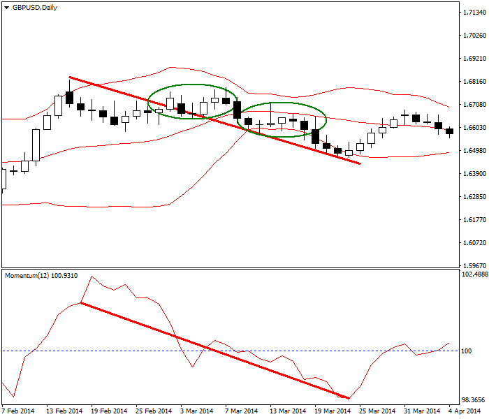
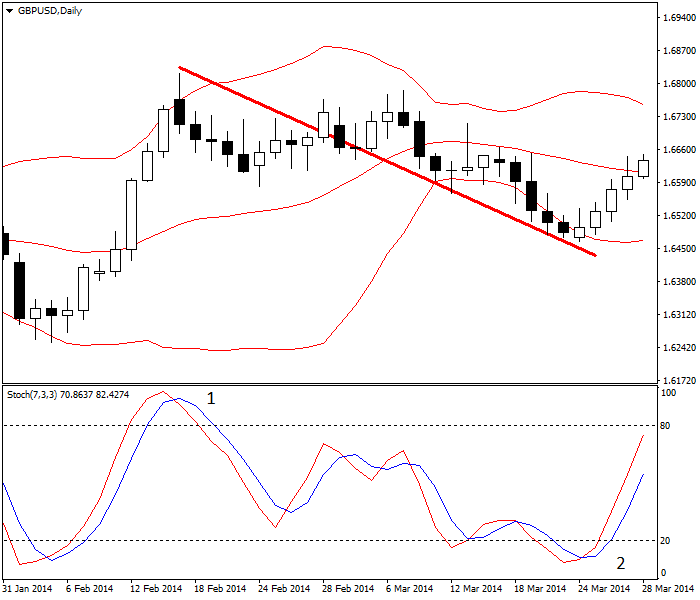
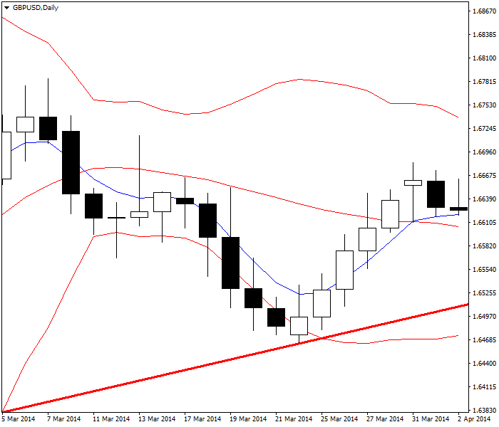
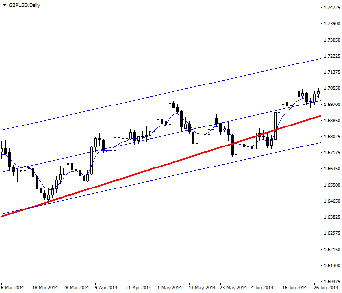

<!DOCTYPE html>
<html>
</html>
<head>
  <meta charset="utf-8">
  <meta http-equiv="X-UA-Compatible" content="IE=edge">
  <title>外汇站（fx-z.com） - 交易回调</title>
  <meta name="description" content="">
  <meta name="viewport" content="width=device-width, initial-scale=1">
  <meta name="robots" content="all,follow">
  <!-- Bootstrap CSS-->
  <link rel="stylesheet" href="vendor/bootstrap/css/bootstrap.min.css">
  <!-- Font Awesome CSS-->
  <link rel="stylesheet" href="vendor/font-awesome/css/font-awesome.min.css">
  <!-- Google fonts - Roboto-->
  <link rel="stylesheet" href="https://fonts.googleapis.com/css?family=Roboto:400,300,700,400italic">
  <!-- owl carousel-->
  <link rel="stylesheet" href="vendor/owl.carousel/assets/owl.carousel.css">
  <link rel="stylesheet" href="vendor/owl.carousel/assets/owl.theme.default.css">
  <!-- theme stylesheet-->
  <link rel="stylesheet" href="css/style.default.css" id="theme-stylesheet">
  <!-- Custom stylesheet - for your changes-->
  <link rel="stylesheet" href="css/custom.css">
  <!-- Favicon-->
  <link rel="shortcut icon" href="img/favicon.png">
  <!-- Tweaks for older IEs--><!--[if lt IE 9]>
    <script src="https://oss.maxcdn.com/html5shiv/3.7.3/html5shiv.min.js"></script>
    <script src="https://oss.maxcdn.com/respond/1.4.2/respond.min.js"></script><![endif]-->
</head>
<body>
  <div id="all">
    <div class="container-fluid">
      <div class="row row-offcanvas row-offcanvas-left"> 
        <!--   *** SIDEBAR ***-->
        <div id="sidebar" class="col-md-4 col-lg-3 sidebar-offcanvas">
          <div class="sidebar-content">
            <h1 class="sidebar-heading"> <a href="https://fx-z.com">fx-z.com</a></h1>
            <p class="sidebar-p">介绍外汇相关的基本知识，告诉您如何进行自己的技术面和基本面分析，讲解先进的交易理念，并且为您阐述失败交易者与专业交易者之间的真正区别。 </p>
            <p class="sidebar-p">通过这些课程的学习，您将学会如何根据自己的优势来应用情绪分析，还将了解真实世界的事件会对货币汇率产生什么影响，央行在外汇市场中所发挥的作用，以及交易者在颇受欢迎的即期外汇交易中有哪些选择方案。 </p>
            <ul class="sidebar-menu">
                <!-- Link-->
                <li class="sidebar-item"><a href="https://fx-z.com" class="sidebar-link">首页</a></li>
                <!-- Link-->
                <li class="sidebar-item"><a href="cihui.html" class="sidebar-link">外汇词汇</a></li>
                <!-- Link-->
                <li class="sidebar-item"><a href="ebook.html" class="sidebar-link">获取外汇电子书</a></li>
            </ul>
            <p class="social"><a href="https://www.forextimechina.com.cn/zh?form=IZIN" target="_blank"data-animate-hover="pulse" class="external facebook"><i class="fa fa-eur"></i></a><a href="https://www.forextimechina.com.cn/zh?form=IZIN" target="_blank" data-animate-hover="pulse" class="external gplus"><i class="fa fa-gbp"></i></a><a href="https://www.forextimechina.com.cn/zh?form=IZIN" target="_blank" data-animate-hover="pulse" class="external twitter"><i class="fa fa-rmb"></i></a><a href="https://www.forextimechina.com.cn/zh?form=IZIN" target="_blank" title="" class="external instagram"><i class="fa fa-dollar"></i></a><a href="https://www.forextimechina.com.cn/zh?form=IZIN" target="_blank" data-animate-hover="pulse" class="email"><i class="fa fa-money"></i></a></p>
            <div class="copyright text-center text-md-left">
             
              
            </div>
          </div>
        </div>
        <!--   *** SIDEBAR END ***  -->
        <!--   *** DETAIL ***-->
        <div class="col-md-8 col-lg-9 content-column white-background">
          <div class="small-navbar d-flex d-md-none">
            <button type="button" data-toggle="offcanvas" class="btn btn-outline-primary"> <i class="fa fa-align-left mr-2"></i>菜单</button>
            <h1 class="small-navbar-heading"> <a href="https://fx-z.com/11-1.html">下一篇 </a></h1>
          </div>
          <div class="row">
            <div class="col-xl-10">
              <div class="content-column-content">
                <h1>交易回调</h1>
    <p>
    回调是指打断每一段趋势的逆向走势。回调也被称为“修正”或“回撤”。没有哪种价格走势沿直线变化；回调是非常自然和正常的。它们通常是由于获利了结或交易者犹豫不决而出现，虽然其他原因也可能导致价格在重拾趋势之前略微回退，而且这种回退可能出现在一天的某段时间、一周的某天、一月或一季的某天，还可能只是普通、老套地随机出现。由于回调是从趋势中撤退，它可以通过基于动量的指标动荡来判断。有些分析师相信他们见到了“和谐形态”或回调中的其他规律，例如回调总是倾向于以一种“可衡量的变化”或一个斐波那契数字结束。其正确或有用与否取决于每位交易者自身的判断。
</p>
<p>
    回调是每位交易者的噩梦，因为您必须决定是否：
</p>
<p>
    静待趋势恢复以补回账面损失。
</p>
<p>
    等趋势恢复后迅速退出并重新进入。
</p>
<p>
    “淡出趋势”——即在回调结束前一直逆势交易。
</p>
<p>
    这三种交易决策同样有效，具体选择哪种取决于您选择的时间周期以及您对自己有能力与市场情绪同步交易的信心。
</p>
<p>
    由于确信趋势即将恢复而静待回调结束是长期交易者的做法；他们总是用基本面来支撑交易决策。其主要缺点在于您正在放弃已经获得的收益（账面），这在心理上可能难以接受，而且如果回调演变为逆转走势，这种做法被证明是错误的。
</p>
<p>
    在回调后重新入场是一种标准的“摆动交易者”技巧，而且几乎一定是利用回调来持续盈利的最佳方法。回调并非总是遵循相同的模式，即所谓的 A-B-C 形态——下跌、略微上涨并最终下跌，但无论回调如何设置，重点是您希望判断回调的结束时间。摆动技巧被总结为“逢低买入，逢高卖出”。在摆动交易中，您从不逆势交易。
</p>
<p>
    摆动方法的一项特殊应用是在回调低点买入，在趋势方向的突破位进一步买入，然后等突破之后出现回调时第三次买入——这是基于回调形态来扩大头寸。
</p>
<p>
    虽然许多交易者首选外汇交易的原因是为了其更强的趋势性，但大多数外汇交易者并不像大家想象的一样只进行趋势交易。他们并不是静待回调结束或下一轮方向性摆动，而是淡出趋势。其含义是，无论走势如何，向上还是向上，其持续时间都足以执行一两笔交易。这使突破成为短期交易者最重要的工具，虽然我们知道，突破经常是错误的，而且有时只是随机出现。由于突破的错误和随机性，如果只交易突破且不考虑主要趋势，这并不是一种盈利策略。
</p>
<p>
    评估回调时，您需要判断两项条件——回调何时开始以及您确定它何时结束——或演变为逆转。为了识别回调的开始点，大多数交易者参考一项动量指标，而其中最受欢迎的是随机震荡指标。遗憾的是，随机指标可能长期指向超买/超卖状态，但并未显示回调。
</p>
<p>
    以下图标显示 GBP/USD 上行趋势中的回调。窗口底部的动量随着价格下行而下跌，而且，而布林线随着回调过程而收缩。请记住，在价格重拾走势之前，外汇中布林线的突破通常不会持续三个时段以上。到达最低点之前，该回调有两个平坦点（椭圆形）。换言之，即使是回调也不会呈直线运动，而且它还会出现短时间的调整。这意味着，您不想放弃走势，并且认为由于价格不再下跌，它会在回调并未实际结束时开始上涨。
</p>
<p>
     GBP/USD 进入持续时间较长的回调期。布林线与动量指标有助于评估当前形势。
</p>
<p>
    您如何预测回调即将出现呢？相应的优质指标是强势动量偃旗息鼓——换言之，价格被超买或超卖。以下图表显示随机震荡指标。在短期交易中，随机震荡指标是一项用于判断回调何时出现的优秀工具。
</p>
<p>
     Pullback in GBP/USD relative to its Stochastic oscillator in overbought (1) and oversold (2) conditions
</p>
<p>
    为了更好地理解回调过程，您可以采用两项关于主要移动平均线以及支撑线或阻力线被突破的经典技巧。请查看下图。其蓝色指数移动平均线为 5 时段数据（而布林线始终采用 20 时段）。价格下行越过 5 时段移动平均线并遇见布林线收缩。与所有移动平均线的情况一样，该移动平均线有滞后情况，但在本例中妨碍不大。当价格高于 5 时段移动平均线收市时，您获得回调结束的信号。此外，价格还触及一条新的支撑线，但并未突破它。
</p>
<p>
     5 时段移动平均线与收缩布林线释放 GBP/USD 的回调信号。
</p>
<p>
    突破支撑线是表示回调不再是单纯的回调并且已演变为逆转的关键指标。此时，多重时间周期图表可以派上用场。由于您在更宽的时间周期图表上绘制支撑线，您只知道支撑线的存在，正如您查看 4 小时图表时的每日线一样。当趋势未被突破时，支撑线可能被突破：
</p>
<p>
     GBP/USD 跌回支撑线以下，但趋势依然持续。
</p>
<p>
    P回调是每位交易者的噩梦。判断回调的强度和持续力是无止境的追求。一种比较好的思路是，找一项可靠的指标（无论是 RSI、随机震荡指标或其他方式都可以）来识别您的货币和时间周期中的回调。以下是一些可以利用回调的摆动交易者理念。
</p>
<p>
    在大幅重要突破之后的首次回调位买入；此处的重要突破是指突破支撑线/阻力线、200 日移动平均线、大幅跳空或之前建立的关键价位（尤其是整数位）。
</p>
<p>
    在遇到重要移动平均线的首次回调位买入；此处的重要移动平均线是指您的证券或交易周期中的可靠支撑位。在您的图表上设置不同的移动平均线，以便您在切换时间周期后依然能见到该线。例如，4 小时周期中的 200 时段移动平均线对 EUR/USD 具有某种奇妙的推动效果。价格在突破该平均线之后加速。一些外汇分析师还青睐 200 小时移动平均线。
</p>
<p>
    请关注双重顶、双重底等形态，以及“上吊线”等蜡烛图形态。
</p>
<p>
    <br/>
</p>
<p>
    <br/>
</p>
              </div>
            </div>
          </div>
        </div>
      </div>
    </div>
  </div>
  <!-- JavaScript files-->
  <script src="vendor/jquery/jquery.min.js"></script>
  <script src="vendor/popper.js/umd/popper.min.js"> </script>
  <script src="vendor/bootstrap/js/bootstrap.min.js"></script>
  <script src="vendor/jquery.cookie/jquery.cookie.js"> </script>
  <script src="vendor/owl.carousel/owl.carousel.min.js"></script>
  <script src="vendor/masonry-layout/masonry.pkgd.min.js"></script>
  <script src="js/front.js"></script>
</body>